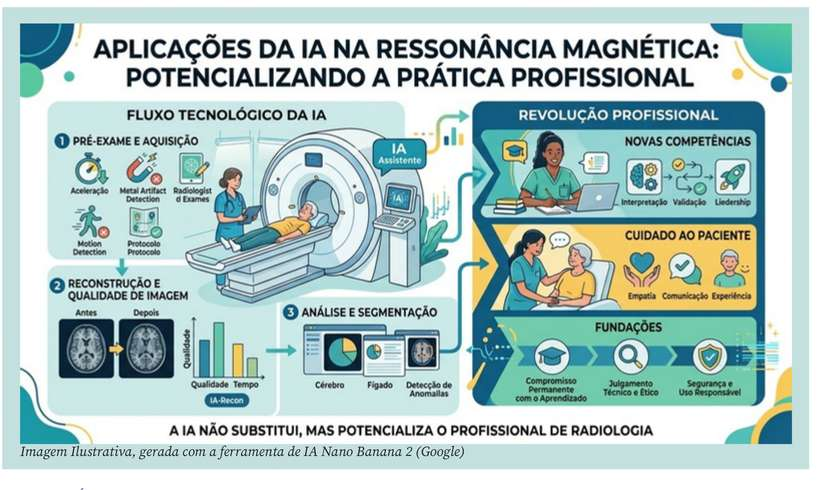

Cabe ao profissional compreender que a IA oferece suporte à decisão, mas não substitui o julgamento técnico nem a responsabilidade profissional [3]. A confiança excessiva na automação pode gerar riscos tão significativos quanto a resistência à inovação. Encontrar o equilíbrio entre essas duas posições talvez seja uma das competências mais importantes da Radiologia contemporânea.
Também merece destaque a humanização da assistência. Em um ambiente onde máquinas executam processos cada vez mais sofisticados, cresce o valor das competências exclusivamente humanas. Empatia, comunicação, acolhimento, escuta qualificada e respeito às particularidades de cada paciente tornam-se diferenciais ainda mais relevantes.
A experiência do paciente em uma sala de RM não depende apenas da velocidade do equipamento ou da eficiência dos algoritmos, mas da segurança transmitida por quem conduz o exame [9]. Essa combinação entre tecnologia e humanização representa, talvez, o maior desafio da próxima década.
A IA continuará evoluindo. Novos algoritmos serão incorporados, novas aplicações clínicas surgirão e os equipamentos se tornarão progressivamente mais inteligentes. No entanto, nenhuma inovação produzirá resultados consistentes sem profissionais preparados para compreender seu funcionamento, reconhecer suas limitações e utilizá-la de forma ética, crítica e responsável.
A história da Radiologia demonstra que cada avanço tecnológico redefiniu competências, criou novas oportunidades e elevou o nível de exigência da profissão. Foi assim com a radiologia digital, com a tomografia computadorizada multislice, com a radiologia intervencionista e com a própria evolução da RM. A IA representa mais um capítulo dessa trajetória e talvez seja aquele que mais valoriza o conhecimento humano.
